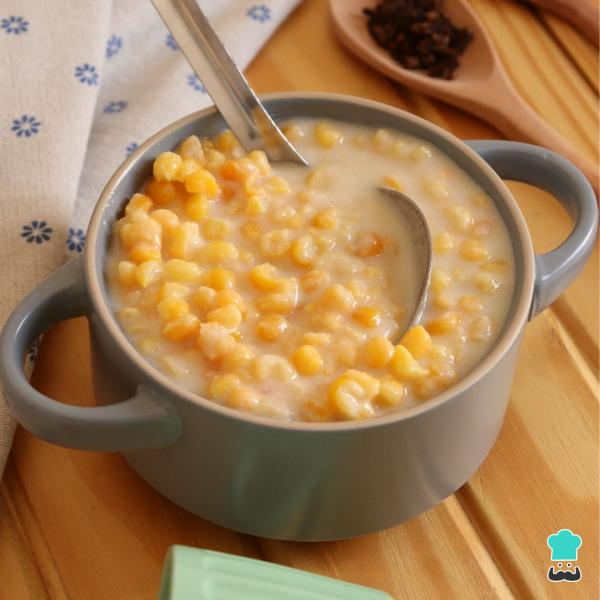

Canjica Cremosa

Ingredientes
- 400g Canjica Branca
- 1 lata de leite condensado
- 1 litro de leite
- 250g de creme de leite
- 300g de amendoim torrado
- 700ml de Água
Modo de Preparo
Cozinhe a canjica com a água até que ela fique "al dente".
Escorra a canjica, coloque ...